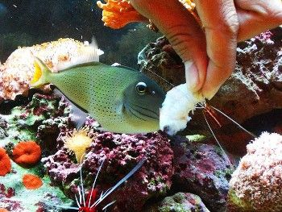
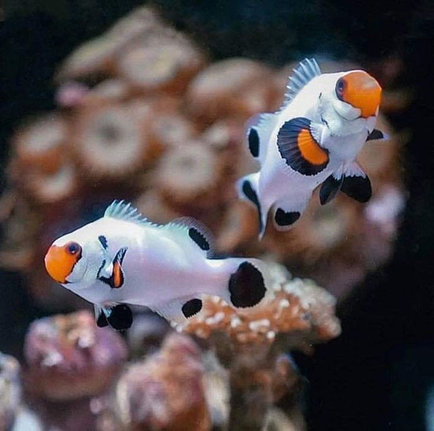
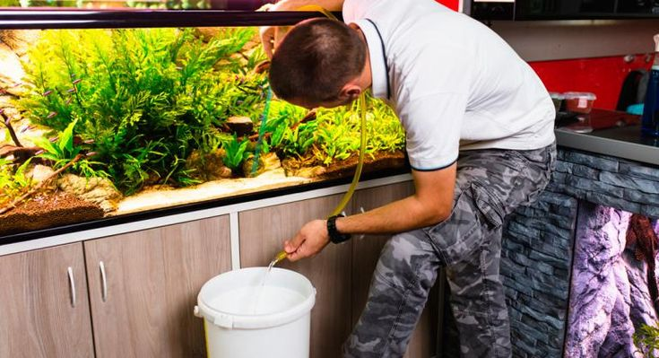

Consejos esenciales para cuidar a tus peces
Mantener a tus peces saludables es clave para un acuario vibrante. Aquí tienes algunos consejos importantes:
Alimentación
Dales alimento de calidad y en pequeñas cantidades para evitar el exceso de comida y mantener el agua limpia.
Compatibilidad
Investiga antes de mezclar especies. Algunos peces son más territoriales y podrían causar conflictos.
Mantenimiento del agua
Cambia el agua regularmente y monitorea parámetros como el pH, temperatura y amoníaco para un entorno ideal.